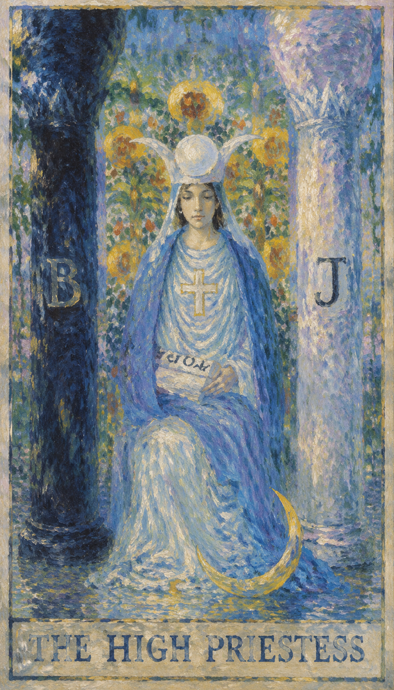
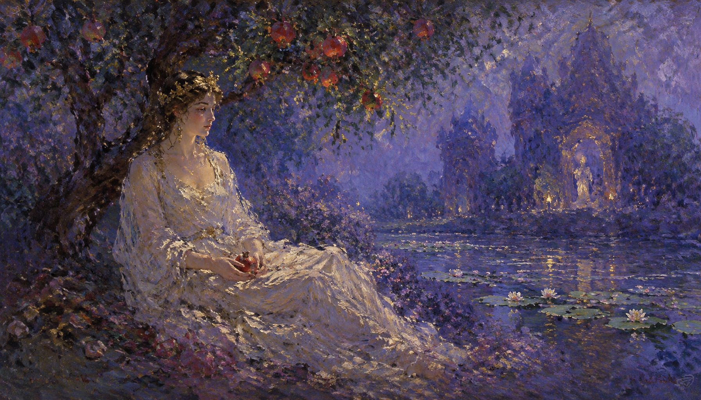
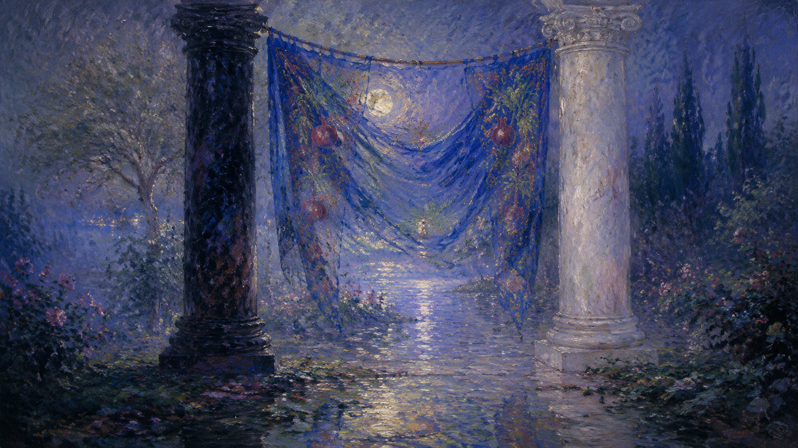
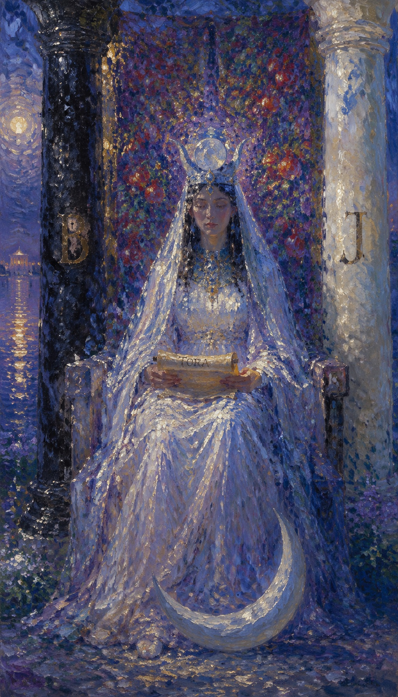
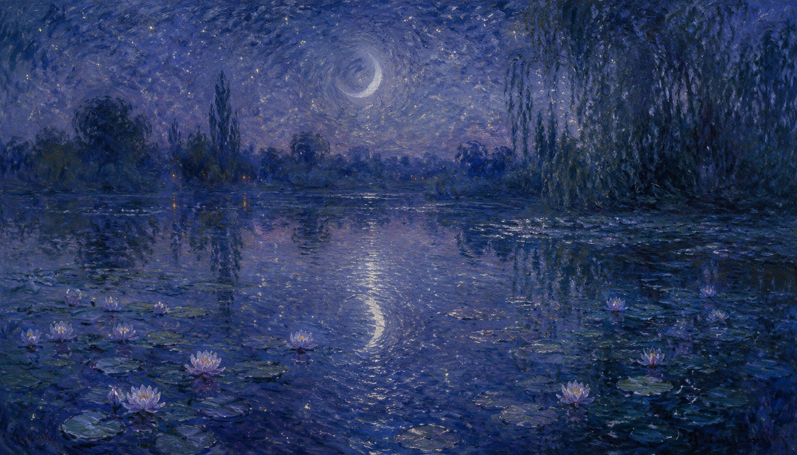
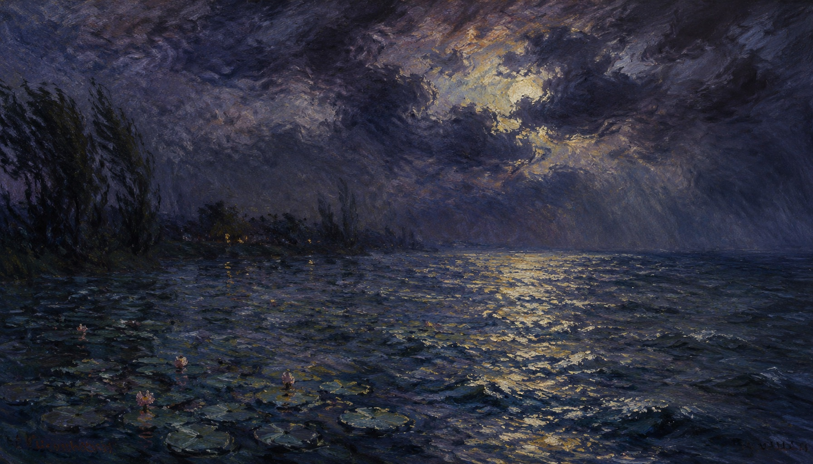
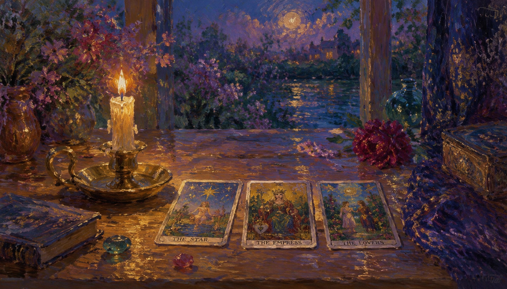

深夜中的虔诚使者，智慧与直觉的象征。她端坐于石凳之上，手捧律法卷宗，静静等待着适合行动的时机。在黑白双柱之间，她维系着世间对立能量的微妙平衡。
← 返回大厅 / 选择其它卡牌塔罗牌女祭司相传是月亮的使者，虔诚，静默却又透着十分的警觉和睿智，是智慧与直觉的象征。相对于魔术师的激情 and 主动，女祭司只是在深夜中手捧经书默默地祈祷着，似乎是中国传统文化中的阴阳。假如说魔术师散发着阳刚的话，那么女祭司则是阴柔的代表，于静寂中凸现沉稳，与寡言中凸显睿智。
由图中可以看到，女祭司端坐于石凳之上，手上的卷宗上书写着 Tora，乃律法之一，代表她内心的知性和洞察力，长短分明，善恶明暗，也代表神秘的魔法，静静等待适合行动的时机，并给于明确的指示。身侧的柱子一黑一白，也暗示了她阴阳的强烈观念，理性的思考和判定。白色的头冠和白色的长裙，象征了她内心的纯洁和对洁净的要求。背后的绿叶和果实，既象征她的女性形象，慈爱和娴静，同时也暗示了她具有强大的直觉力和判定力。
她坐在黑白廊柱之间，静默却又波涛汹涌，在黑与白，日与夜，正义与邪恶的徘徊中感悟人世沧桑。
女祭司的原型是古希腊神话中的 珀耳塞福涅 (Persephone) —— 冥界之后与生命循环的象征。牌面中背景帷幕上那饱满的石榴，正是暗示着希腊神话中冥后吞下的那颗代表婚姻不中断的石榴子，同时也暗示着欲望、生命与剥开自我的思考力和洞察力。她裙角边的月亮，也是智慧和直觉的象征。



蓝色常与智慧、深思和冷静联系在一起，暗示深沉的内省和直觉。
代指圣经中的柱子波阿斯（Boaz），象征「力量」。代表阴性、物质与被动力量。
代指圣经中的柱子雅斤（Jachin），象征「树立与建设」。代表阳性、精神与主动力量。
黑色与白色的柱子并立，代表对立和极性的平衡，如阴阳、积极与消极、物质与精神。
十字可能代表平衡、信仰和神性，也可以象征心智和物质世界的交汇。
月亮常与女性能量、直觉和潜意识相关联，体现潮汐与情绪波动的智慧。
横跨的蓝色帷幕，可能代表隐藏的秘密或更深层的真理，需要进一步的内省才能揭开。
学习和知识的象征，代表寻求或拥有的智慧、自然的律法、自然之道与神秘真理。
指明周期、变化、时间流逝和直觉的循环，象征三相女神的崇高地位。
白色是纯洁、无罪和启示的颜色，象征内在的光明、真理和洁净动机。
表示宗教信仰、神圣保护以及可能的神圣使命。
代表意识和智能的觉醒。黄色关联着阳光、理性思考、活力和快乐。
象征参与者忠诚于某种宗教、誓言或高深的精神信念。
象征女性形象、生长、慈爱和娴静。石榴暗示欲望、丰饶和剥开自我的洞察力。
表明其高高在上、与神圣领域的直接联系，将潜意识的智慧传达给意识世界。
数字 2 代表着分化，精神与物质、灵与肉、生与死、正与反的分别与相对，以及两端相互辨证 of 思考方式。与 1 数的主动发射能量相反，2 数代表接收能量。
2 数的人对份量均衡非常敏感，看事情较为透彻。他们心思细腻，善于分析和解决问题，天赋有写作、说故事甚至双重性格的特质。在金钱上他们学习力强、直觉敏感；在感情上浪漫多情却也优柔寡断。
作为阴性能量的绝对代表，女祭司的 2 号牌特质表现为「依赖与吸收」，极易吸收别人的能量并受到干扰。如何管控自身高需求和情绪化，是其一生的修行。

高位的女祭司是一张代表精神和心灵发展的牌。你应该要相信你的直觉，因为在这一点上，有些事情可能在表面上看不见。这是一个向内心探索的阶段，以便为你人生的下一个阶段播种，去消化并感悟世事。
知性理性 · 富有研究精神 · 敏锐洞察力 · 直觉与第六感 · 天启与天象
相信直觉 · 探寻潜意识真相 · 静观其变 · 隐秘智慧 · 精神上的知己
柏拉图式恋爱 · 精神契合 · 互补成长 · 感情内敛 · 暂无新桃花
双方保持理智状态，重视精神心灵结合，能够一同学习成长。对方的爱意深藏在内心。若为单身，目前是沉淀充实自我的极佳时机，不必急于开展新恋情。
考运极佳 · 责任感强 · 卓越判断力 · 按部就班 · 适合学术与创作
求知欲旺盛，适合从事助理、作家、心理咨询、研发、教育、财务等行业。学习上专注力强，极具考运，洞察力一流。
低调温和 · 知心知己 · 理性消费 · 谨慎投资 · 闷声发大财
不喜张扬，人缘虽冷淡但能结交知心好友。财运平稳，善于理财，绝不冲动消费。在理财上女祭司鼓励你用直觉与细致调查做出评估，切忌大额盲目投资。
关注循环 · 妇科与手脚冰凉 · 倾听身体暗示 · 精神压力与情绪疾病
容易手脚冰凉、体内循环较差、宫寒。由于内心敏感情绪化，也需要提防心理焦虑与抑郁，时时倾听身体的声音以获取平衡。
喜欢阅读并从中获得心智成长，多以理性方式理解世界，喜欢安静独处。

逆位的女祭司暗示你当前无法倾听内在的声音，或内心的知性无法转化为有效的行动。此时容易冲动、浮躁或失去理性，应当走出去接受现实生活中的人际交往与新机会，而不是自我封闭。
粗心大意 · 易紧张神经质 · 意气用事 · 秘密泄露 · 自我封闭
冲动盲目 · 失去直觉 · 沟通受阻 · 财务隐患 · 暗潮汹涌
暗恋错过 · 拒绝沟通 · 容易受骗 · 关系冷战 · 单身独身主义
内心封闭且性格被动，面对心仪对象脑袋空白、不敢表白，极易因此错过良缘。已婚者不善表达情感，缺乏深层沟通，易引发冷战或猜忌误会。
肤浅固执 · 粗心大意 · 错失良机 · 考核紧张 · 台面下暗潮汹涌
认知流于表面，固执己见，不愿学习新技能却又自以为是。在压力下极度焦虑，容易因犹豫不决而丧失发展机会。学业上比较懒散，粗心大意易失误。
孤立排他 · 盲目理财 · 消费无度 · 提防欺诈 · 及时止损
因性格封闭冷淡、不善沟通而人缘欠佳，容易被边缘化或得罪人。财运不佳，消费缺乏计划性，容易冲动跟随他人进行投资，需严防潜在的合同欺诈。
精神衰弱 · 极端减肥 · 消化道溃疡 · 贫血与淋巴问题 · 压力累积
态度傲慢或个性好强给自己施加了过大压力，容易引发肠胃病、贫血。心胸变狭隘，可能因好胜而深感孤独，应注意情绪宣泄，调节作息。
计划被迫打断，沟通出现重大偏颇，内心充满猜忌和不安全感。

当女祭司出现在三牌阵中，它召唤的是「向内觉察」的能量。它指示着此时不宜诉诸强力与外在扩张，而应退回内心，聆听直觉，在寂静中寻求对立的平衡。点击下方卡牌揭示隐秘启示。
在过去的一段时间里，你扮演了沉默的观察者。内在的智慧和直觉已为你筑起坚实的潜意识基础，能量已在暗中孕育。
黑白廊柱在身侧，律法在手。此刻不需要激进表态或主动出击。像女祭司一样，在静默中审视细节，静待时机自然成熟。
直觉将在未来的关键时刻为你揭示隐藏的真相。你将拥有极强的洞察力，看清事物的二元极性，并在心灵层面上获得巨大成长。